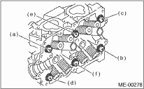

NOTE:
If only a single part is replaced, perform the work without removing the engine from vehicle. Refer to “Valve Clearance” for preparation work. 
1. Remove the V-belts.
2. Remove the crank pulley.
3. Remove the timing belt cover.
4. Remove the timing belt.
5. Remove the cam sprocket.
6. Remove the intake manifold.
7. Remove the bolt which installs the A/C compressor bracket on cylinder head.
8. Remove the valve rocker assembly.
9. Remove the camshaft.
10. Remove the cylinder head bolts in alphabetical sequence as shown in the figure.
NOTE:
Leave bolts (a) and (c) engaged by three or four threads to prevent the cylinder head from falling.

11. While tapping the cylinder head with a plastic hammer, separate it from cylinder block.
12. Remove the bolts (a) and (c) to remove cylinder head.
13. Remove the cylinder head gasket.
CAUTION:
Be careful not to scratch the mating surface of cylinder head and cylinder block.
14. Similarly, remove the right side cylinder head.